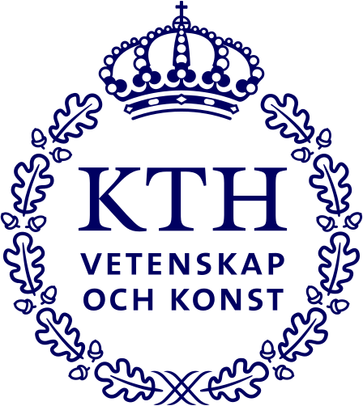
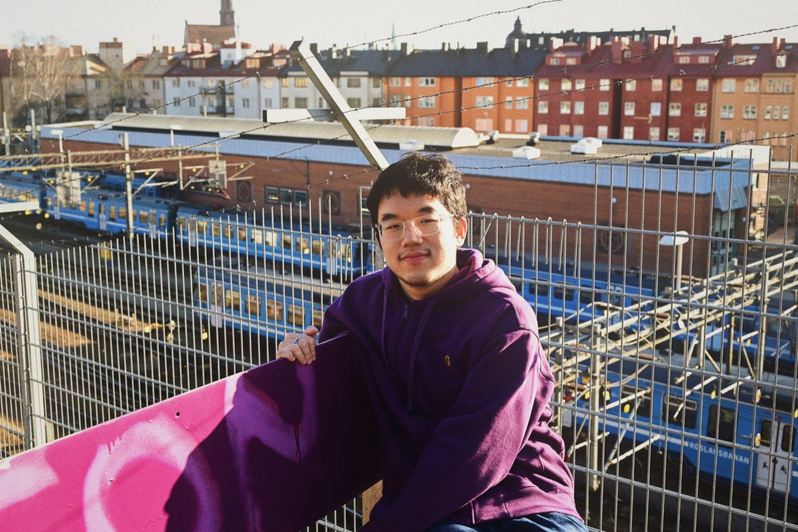
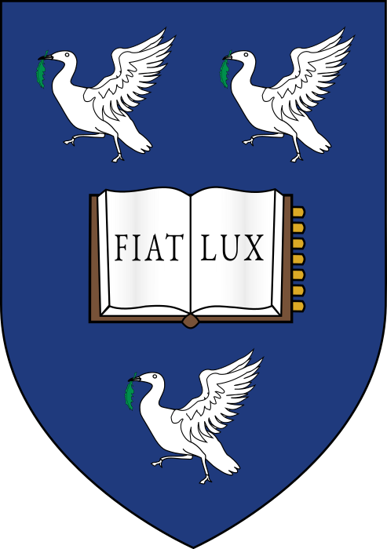
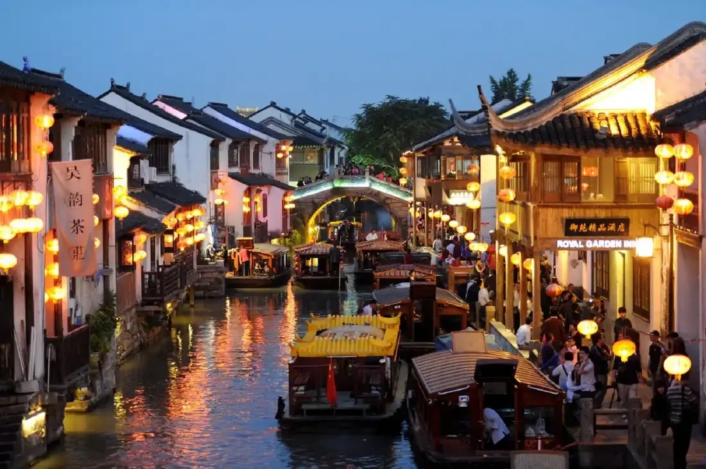
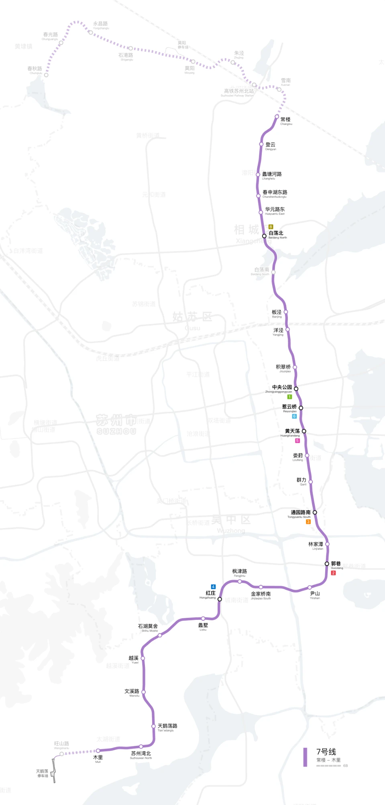

KTH Royal Institute of Technology
Aug 2025 – Jun 2027Master in Sustainable Urban Planning and Design

I study how policy and street design shape everyday public life, and how planning can make cities more sustainable.
I am a master's student in Sustainable Urban Planning and Design at KTH Royal Institute of Technology in Stockholm, currently on exchange at KU Leuven. I hold a dual BEng and BA in Urban Planning and Design from Xi'an Jiaotong-Liverpool University and the University of Liverpool.
My experience spans a municipal planning bureau, a rail transit design institute, community renewal work and two years of teaching geography. That mix taught me to move between data, drawings and people.

Master in Sustainable Urban Planning and Design
Exchange study, Master of Urbanism, Landscape and Planning
BEng in Urban Planning and Design (dual degree)

BA in Urban Planning and Design (dual degree)
How buildings affect health, environment and resources, and how to assess and reduce those impacts.
Cities and city networks as drivers of regional development, competitiveness and territorial cohesion.
Applying GIS and statistical tools to practical planning problems, then presenting and critiquing the results.
Visions, scenarios and backcasting for sustainable transport, and how mobility links to urban development.
Theories and methods of planning research: forming questions, choosing methods, presenting results.
How landscape thinking has shaped the planning and design of cities and regions since the twentieth century.
A design approach that welcomes human diversity, applied by analysing and redesigning an existing building.
How to develop and manage complex urban projects, involve public and private actors, and test feasibility.
Recognising fire hazards in buildings, and knowing how to prevent them and where to find solutions.

Studied how a municipal nighttime economy initiative affected urban conviviality, combining case study, policy review, social media data from Zhihu and fieldwork on Guanqian Street. I interviewed 23 tourists, residents and shopkeepers: over half viewed the project favourably, while homogeneity and street tidiness were concerns. The findings suggest that policy support (preferential regulations, events) and street design (lighting, furniture, layout) can strengthen nighttime conviviality.
Intern at China Railway 4th Survey & Design Institute. I took part in site selection and route planning, and practised location analysis, integration with residential and commercial zones, and cost assessment.

Assistant at the Wuhan Municipal Bureau of Urban and Rural Planning. I took part in site selection and implementation planning, and produced visual content for promotional materials and web publications.
Project member in a community renewal project in Suzhou.
Related XJTLU News: Symposium explores yesterday, today, and tomorrow of Suzhou Community GardenSeeing how other places work, one street at a time.
On repeat, loudly.
Books, slowly.
Still the best way to read a city.